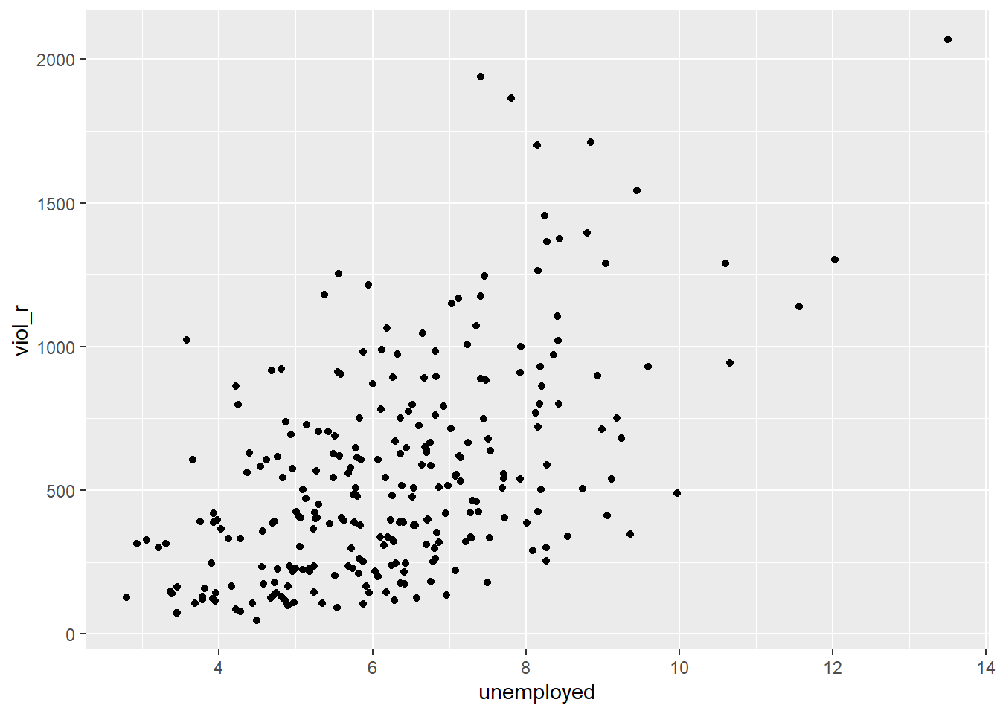

Chapter 6 Regression II
6.1 Introduction: models in scientific research
In science, one of our main concerns is developing models of the world, models that help us understand the world a bit better or predict how things will develop better. You can read more about modelling in scientific research here. Statistics provides a set of tools that help researchers build and test scientific models.
Our models can be simple. We can think that unemployment is a factor that may help us to understand why cities differ in their level of violent crime. We could express such a model like this:

Surely, we know the world is complex, and other things may help us understand why some cities have more crime than others. So, we may want to have tools that allow us to examine such models. Like for example, the one below:

In this session, we will continue our journey with regression analysis. This form of analysis has been one of the main techniques of data analysis in the social sciences for many years, and it belongs to a family of techniques called generalised linear models. Regression is a flexible model that allows you to “explain” or “predict” a given outcome (Y), variously called your outcome, response or dependent variable, as a function of a number of what are variously called inputs, features or independent, explanatory, or predictive variables (X1, X2, X3, etc.). Following Gelman and Hill (2007), we will try to stick, for the most part, to the terms outputs and inputs.
Today, we will cover something called linear regression or ordinary least squares regression (OLS), a technique you use when you are interested in explaining variation in an interval-level variable. First, we will see how you can use regression analysis when you only have one input, like in our first model. Then, next week, we will move to situations when we have several explanatory variables or inputs.
We will use a new dataset today, specifically the data used by Patrick Sharkey and his colleagues, to study the effect of non-profit organisations on crime levels. In “Uneasy Peace”, Prof Sharkey argues that one factor contributing to the decline of crime from the 1990s onwards was the role played by non-profit community organisations in bringing peace and services to deteriorated neighbourhoods. Watch this video to gain a more theoretical background and learn about the research.
In this session, we will use the replication data from one of the papers that Prof Sharkey published to study this question. This data is found in the Harvard Dataverse. If you are interested in the specific study analysing this data, you can find it here.
urlfile <- "https://dataverse.harvard.edu/api/access/datafile/:persistentId?persistentId=doi:10.7910/DVN/46WIH0/ARS2VS"
communitycrime <- read.table(urlfile, sep = '\t',header = T)As before, we create an object with the permanent URL address, and then we use a function to read the data into R. The data can be saved using an api, and it is in tab-separated format. We use the read.table function from base R for this. We pass two arguments to the function sep= '\t', telling R this file is tab separated. The header = T function tells R that it is TRUE (T) that this file has a first row that acts as a header (this row has the name of the variables).
There are many more variables here that we are going to need, so let’s do some filtering and selection. We will focus on 2012, the most recent year in the dataset, and just a few select variables.
library(dplyr)
df <- filter(communitycrime, year == "2012")
df <- select(df, place_name, state_name, viol_r,
black, lesshs, unemployed, fborn,
incarceration, log_incarceraton,
swornftime_r, log_viol_r, largest50)So now we have a more manageable data set that we can use for this session. The file includes a sample of 264 US cities (see place_name) across 44 of states:
##
## Alabama Alaska Arizona
## 4 1 9
## Arkansas California Colorado
## 1 65 10
## Connecticut District of Columbia Florida
## 5 1 18
## Georgia Idaho Illinois
## 2 1 8
## Indiana Iowa Kansas
## 3 3 5
## Louisiana Maryland Massachusetts
## 4 1 3
## Michigan Minnesota Mississippi
## 6 3 1
## Missouri Montana Nebraska
## 5 1 2
## Nevada New Hampshire New Jersey
## 3 1 4
## New Mexico New York North Carolina
## 1 5 9
## North Dakota Ohio Oklahoma
## 1 5 4
## Oregon Pennsylvania Rhode Island
## 4 4 1
## South Carolina South Dakota Tennessee
## 3 1 6
## Texas Utah Virginia
## 30 4 7
## Washington Wisconsin
## 6 3The variables we have extracted contain information on the demographic composition of those cities (per cent black population, per cent without a high school degree, per cent unemployed, per cent foreign-born), and some criminal justice ones (incarceration rate and the rate of sworn full-time police officers). We also have measures of the violence rate and a binary indicator that tells us if the city is one of the 50 largest in the country.
We will examine the relationship between violent crime and a variable measuring unemployment (unemployed). Let’s look at the violence rate:

As you can see, it is skewed. Violence is our target variable, the one we want to better understand. Sometimes, we have to transform variables so that the assumptions of the models we use are better respected. We will discuss this in greater depth later. For now, just trust us in that rather than using viol_r, we will use the logarithmic transformation of the violence rate, log_viol_r.

Let’s look at the scatterplot between the log of the violence rate and unemployment:
What do you think when looking at this scatterplot? Is there a relationship between violence and unemployment? Does it look like cities with a high score on the X axis (unemployment) also have a high score on the Y axis (violent crime)? It may be a bit hard to see, but we think there is certainly a trend.
6.2 Motivating regression
Now, imagine that we play a game. Imagine we have all the names of the cities in a hat, and we randomly take one of the names from the hat. You’re sitting in the audience, and you have to guess the level of violence (log_viol_r) for that city. Imagine paying £150 to the student who gets the closest to the right value. What would you guess if you only had one guess and knew (as we do) how the log of violent crime is distributed?
ggplot(df, aes(x = log_viol_r)) +
geom_density() +
geom_vline(xintercept = 6.061, linetype = "dashed", size = 1, color="red") +
ggtitle("Density estimate and mean of log violent crime rate")## Warning: Using `size` aesthetic for lines was deprecated in ggplot2 3.4.0.
## ℹ Please use `linewidth` instead.
## This warning is displayed once every 8 hours.
## Call `lifecycle::last_lifecycle_warnings()` to see where this warning was
## generated.
## Min. 1st Qu. Median Mean 3rd Qu. Max.
## 3.831 5.532 6.149 6.061 6.595 7.634If we only had one shot, we would go for the mean or the median (given the skew). Most cities have values clustered around those values, which is another way of saying they are bound to be not too far from them. It would be silly to say 4, for example, since very few cities have such low levels of violence (as measured by log_viol_r).
Imagine, however, that now, when we take the name of the city from the hat, you are also told how much unemployment there is in that city - so the value of the unemployed variable for the city that has been selected (for example, 9). Imagine that you also have the scatterplot we produced earlier in front of you. Would you still go for the value of “six” (the mean) as your best guess for the value of the selected city?
We certainly would not go with the overall mean or median as my prediction any more. If somebody told me the value unemployed for the selected respondent is 9, we would be more inclined to guess the mean value for the cities with that level of unemployment (the conditional mean) rather than the overall mean across all the cities. Wouldn’t you?
If we plot the conditional means, we can see that the mean log_viol_r for cities that report an unemployment rate of 9 is around 6.5. So you may be better off guessing that.

Linear regression tackles this problem using a slightly different approach. Rather than focusing on the conditional mean (smoothed or not), it draws a straight line that tries to capture the trend in the data. If we focus on the regions of the scatterplot that are less sparse, we see that this is an upward trend, suggesting that as the level of unemployment increases, so does the level of violent crime.
Simple linear regression draws a single straight line of predicted values as the model for the data. This line would be a model, a simplification of the real world like any other model (e.g., a toy pistol, an architectural drawing, a subway map) that assumes that there is approximately a linear relationship between X and Y. Let’s draw the regression line:
ggplot(data = df, aes(x = unemployed, y = log_viol_r)) +
geom_point(alpha = .2, position = "jitter") +
geom_smooth(method = "lm", se = FALSE, color = "red", size = 1) ## `geom_smooth()` using formula = 'y ~ x'The geom_smooth function asks for a geom with the regression line, method=lm asks for the linear regression line, se=FALSE asks for just the line to be printed, and the other arguments specify the colour and thickness of the line.
What that line is doing is giving you guesses (predictions) for the values of violent crime based on the information we have about the level of unemployment. It gives you one possible guess for the value of violence for every possible value of unemployment and links them all together in a straight line.
Another way to think about this line is as the best possible summary of the cloud of points represented in the scatterplot (if we can assume that a straight line would do a good job of this). If we were to tell you to draw a straight line that best represents this pattern of points, the regression line would be the one that best does it (if certain assumptions are met).
The linear model is then a model that takes the form of the equation of a straight line through the data. The line does not go through all the points. In fact, you can see it is a slightly less accurate representation than the (smoothed) conditional means:
As De Veaux et al. (2012: 179) highlight: “like all models of the real world, the line will be wrong, wrong in the sense that it can’t match reality exactly. But it can help us understand how the variables are associated”. A map is never a perfect representation of the world; the same happens with statistical models. Yet, as with maps, models can be helpful.
6.3 Fitting a simple regression model
In order to draw a regression line, we need to know two things: (1) We need to know where the line begins: what is the value of Y (our dependent variable) when X (our independent variable) is 0 so that we have a point from which to start drawing the line. The technical name for this point is the intercept. (2) And we need to know what is the slope of that line, that is, how inclined the line is, the angle of the line.
If you recall from elementary algebra (and you may not), the equation for any straight line is: \(y = mx + b\) In statistics, we use a slightly different notation, although the equation remains the same: \(y = b_0 + b_1x\)
We need the origin of the line (\(b_0\)) and the slope of the line (\(b_1\)). How does R get the intercept and the slope for the green line? How does R know where to draw this line? We need to estimate these parameters (or coefficients) from the data. How? We don’t have time to get into these more mathematical details now. You should study the required reading to understand this (required means it is required, it is not optional)7. For now, suffice to say that for linear regression models like the one we cover here when drawing the line, R tries to minimise the distance from every point in the scatterplot to the regression line using a method called least squares estimation.
In order to fit the model, we use the lm() function using the formula specification (Y ~ X). Typically, you want to store your regression model in a “variable”, let’s call it fit_1:
In your R Studio global environment space, you will see a new object called fit_1 with 12 elements on it. We can get a sense for what this object is and includes using the functions we introduced in previous weeks:
## [1] "lm"## $names
## [1] "coefficients" "residuals" "effects" "rank"
## [5] "fitted.values" "assign" "qr" "df.residual"
## [9] "xlevels" "call" "terms" "model"
##
## $class
## [1] "lm"R is telling us that this is an object of class lm and includes several attributes. One of the beauties of R is that you are producing all the results from running the model, putting them in an object, and then giving you the opportunity to use them later on. If you want to see the basic results from running the model, you can use the summary() function.
##
## Call:
## lm(formula = log_viol_r ~ unemployed, data = df)
##
## Residuals:
## Min 1Q Median 3Q Max
## -1.81195 -0.44612 0.06817 0.45424 1.50438
##
## Coefficients:
## Estimate Std. Error t value Pr(>|t|)
## (Intercept) 4.57817 0.14899 30.73 <2e-16 ***
## unemployed 0.23710 0.02302 10.30 <2e-16 ***
## ---
## Signif. codes: 0 '***' 0.001 '**' 0.01 '*' 0.05 '.' 0.1 ' ' 1
##
## Residual standard error: 0.6254 on 262 degrees of freedom
## Multiple R-squared: 0.2882, Adjusted R-squared: 0.2855
## F-statistic: 106.1 on 1 and 262 DF, p-value: < 2.2e-16Or, if you prefer a more parsimonious presentation, you could use the display() function of the arm package:
## lm(formula = log_viol_r ~ unemployed, data = df)
## coef.est coef.se
## (Intercept) 4.58 0.15
## unemployed 0.24 0.02
## ---
## n = 264, k = 2
## residual sd = 0.63, R-Squared = 0.29For now, we just want you to focus on the numbers in the “Estimate” column. The value of 4.58 estimated for the intercept is the “predicted” value for Y when X equals zero. This is the predicted value of the violence score when the level of unemployment is zero.
We then need the \(b_1\) regression coefficient for our independent variable, the value that will shape the slope in this scenario. This value is 0.24. This estimated regression coefficient for our independent variable has a convenient interpretation. When the value is positive, it tells us that for every one unit increase in X, there is a \(b_1\) increase on Y. If the coefficient is negative, then it represents a decrease in Y. Here, we can read it as “for every one unit increase in the percentage of people unemployed, there is a 0.24 unit increase in the logarithm of the violence rate.”
Knowing these two parameters not only allows us to draw the line, but we can also solve for any given value of X. Let’s go back to our guess-the-violence game. Imagine if we tell you the unemployment rate is 4. What would be your best bet now? We can go back to our regression line equation and insert the estimated parameters:
\(y = b_0 + b_1x\)
\(y = 4.58 + 0.24 * 4\)
\(y = 5.526564\)
Or, if you don’t want to do the calculation yourself, you can use the predict function (differences are due to rounding error):
#First, you name your stored model, and then you identify the new data
#(which has to be in a data frame format and with a variable name matching
#the one in the original data set)
predict(fit_1, data.frame(unemployed = c(4))) ## 1
## 5.526564This is the expected value of Y, the log of the violence rate, when X, unemployment is 5% of the population according to our model (according to our simplification of the real world, our simplification of the whole cloud of points into just one straight line). Look back at the scatterplot we produced earlier with the green line. Does it look like the green line when X is 4 corresponds to a value of Y of 5.5?
6.4 Residuals: R squared
In the output, when we ran the model above, we saw something called the residuals. The residuals (in regression) are the differences between the observed values of Y for each case minus the predicted or expected value of Y, in other words, the distances between each point in the dataset and the regression line (see the visual example below).

You see, we have our line, our predicted value, and then we have the black dots, which are our observed values. The distance between them is essentially the amount by which we were wrong, and all these distances between observed and predicted values are our residuals. Least square estimation, the “machine” we use to build the regression line, essentially aims to reduce the squared average of all these distances: that’s how it draws the line.
Why do we have residuals? Well, think about it. The fact that the line is not a perfect representation of the cloud of points makes sense, doesn’t it? You cannot predict perfectly what the value of Y is for every city just by looking ONLY at unemployment! This line only uses information regarding unemployment. This means there’s bound to be some difference between our predicted level of violence, given our knowledge of unemployment (the regression line) and the actual level of violence (the actual location of the points in the scatterplot). Other things that matter are not being taken into account by our model to predict the values of Y. There are other things that surely matter regarding understanding violence. And then, of course, we have measurement errors and other forms of noise.
We can re-write our equation like this if we want to represent each value of Y (rather than the predicted value of Y) then: \(y = b_0 + b_1x + e(residuals)\)
The residuals capture how much variation is unexplained - how much we still have to learn if we want to understand variation in Y. A good model tries to maximise explained variation and reduce the magnitude of the residuals.
We can use information from the residuals to produce a measure of effect size - how good our model is in predicting variation in our dependent variables. Remember our game where we try to guess violence (Y)? If we had no information about X, our best bet for Y would be the mean of Y. The regression line aims to improve that prediction. By knowing X’s values, we can build a regression line that aims to get us closer to the actual values of Y.

The distance between the mean (our best guess without any other information) and the observed value of Y is the total variation. The residual is the difference between our predicted value of Y and the observed value of Y. This is what we cannot explain (i.e., variation in Y that is unexplained). The difference between the mean value of Y and the expected value of Y (the value given by our regression line) is how much better we are doing with our prediction by using information about X (i.e., in our previous example, it would be variation in Y that can be explained by knowing about unemployment). How much closer the regression line gets us to the observed values? We can then contrast these two different sources of variation (explained and unexplained) to produce a single measure of how good our model is. The formula is as follows:
\[ R^2 = \frac{\text{Explained Variation}}{\text{Total Variation}} \]
This can also be written as:
\[ R^2 = \frac{\sum (\hat{Y}_i - \bar{Y})^2}{\sum (Y_i - \bar{Y})^2} \]
Where: - \(Y_i\): observed values of the dependent variable. - \(\hat{Y}_i\): predicted values from the regression line. - \(\bar{Y}\): mean of the observed \(Y\) values. - \(\sum (\hat{Y}_i - \bar{Y})^2\): explained variation (the squared differences between the predicted values and the mean of \(Y\)). - \(\sum (Y_i - \bar{Y})^2\): total variation (the squared differences between the observed values and the mean of \(Y\)).
All this formula is doing is taking a ratio of the explained variation (the squared differences between the regression line and the mean of Y for each observation) by the total variation (the squared differences of the observed values of Y for each observation from the mean of Y). This gives us a measure of the percentage of variation in Y that is “explained” by X.
Then, we can take this value as a measure of the strength of our model. If you look at the R output, you will see that the \(R^2\) for our model was .29 (look at the multiple R square value in the output). We can say that our model explains 29% of the variance in the fear of violent crime measure.
#As an aside, and to continue emphasising your appreciation of the object-oriented nature of R,
#when we run the summary() function, we are simply generating a list object of the class summary.lm.
attributes(summary(fit_1))## $names
## [1] "call" "terms" "residuals" "coefficients"
## [5] "aliased" "sigma" "df" "r.squared"
## [9] "adj.r.squared" "fstatistic" "cov.unscaled"
##
## $class
## [1] "summary.lm"#This means that we can access its elements if so we wish.
#So, for example, to obtain just the R Squared, we could ask for:
summary(fit_1)$r.squared## [1] 0.2881989Knowing how to interpret this is important. \(R^2\) ranges from 0 to 1. The greater it is, the more powerful our model is; the more explaining we are doing, the better we can account for variation in our outcome \(Y\) with our input. In other words, the stronger the relationship is between \(Y\) and \(X\). As with all the other measures of effect size, interpretation is a matter of judgement. You are advised to see what other researchers report in relation to the particular outcome that you may be exploring. This is a reasonable explanation of how to interpret R-Squared.
Weisburd and Britt (2009: 437) suggest that in criminal justice, you rarely see values for \(R^2\) greater than .40. Thus if your \(R^2\) is larger than .40, you can assume you have a powerful model. When, on the other hand, \(R^2\) is lower than .15 or .2, the model is likely to be viewed as relatively weak. Our observed r squared here is not too bad. There is considerable room for improvement to develop a better model to explain violence8. In any case, many people would argue that \(R^2\) is a bit overrated. You need to be aware of what it measures and the context in which you use it. Read here for some additional detail.
6.5 Inference with regression
In real applications, we have access to a set of observations from which we can compute the least squares line, but the population regression line is unobserved. So, our regression line is one of many that can be estimated. A different sample would produce a different regression line. If we estimate \(b_0\) and \(b_1\) from a particular sample, then our estimates will be different from \(b_0\) and b1 in the population. However, if we could average the estimates obtained over a very large number of data sets, the average of these estimates would equal the coefficients of the regression line in the population.
We can compute standard errors for the regression coefficients to quantify our uncertainty about these estimates. These standard errors can, in turn, be used to produce confidence intervals. This would require us to assume that the residuals are normally distributed. As seen in the image and for a simple regression model, you are assuming that the values of \(Y\) are approximately normally distributed for each level of \(X\):
In those circumstances, we can trust the confidence intervals that we can draw around the regression line, as in the image below:
The dark blue line marks the best fit. The two dark-pink lines mark the limits of the confidence interval. The light-pink lines show the sampling distributions around each confidence-interval limit (the many regression lines resulting from repeated sampling); notice that the best-fit line falls at the extreme of each sampling distribution.
As we saw before, when summarising the model, R will compute the standard errors.
## Estimate Std. Error t value Pr(>|t|)
## (Intercept) 4.5781742 0.14898596 30.72890 7.474077e-89
## unemployed 0.2370975 0.02302022 10.29953 4.145166e-21In our example, we can see the coefficient for our predictor is statistically significant.
We can also obtain confidence intervals for the estimated coefficients using the confint() function:
## 2.5 % 97.5 %
## (Intercept) 4.2848120 4.8715365
## unemployed 0.1917693 0.2824257This blog post provides a nice animation of the confidence interval and hypothesis testing.
6.6 Regression assumptions
Like other models and statistical tests, the regression model also makes assumptions of its own. In fact, there are so many that we could spend an entire class discussing them. Gelman and Hill (2007) point out that the most important regression assumptions by decreasing order of importance are:
- Validity. The data should be appropriate for the question that you are trying to answer:
“Optimally, this means that the outcome measure should accurately reflect the phenomenon of interest, the model should include all relevant predictors, and the model should generalize to all cases to which it will be applied… Data used in empirical research rarely meet all (if any) of these criteria precisely. However, keeping these goals in mind can help you be precise about the types of questions you can and cannot answer reliably.”
Additiviy and linearity. These are the most important mathematical assumptions of the model. You can include interaction effects in your models if the additivity assumption is violated. This is something we will discuss in more detail in future sessions. similarly, we will discuss problems with non-linearities. If the relationship is non-linear (e.g., it is curvilinear), predicted values will be wrong in a biased manner, meaning that predicted values will systematically miss the true pattern of the mean of y (as related to the x-variables).
Independence of errors. Regression assumes that the errors from the prediction line (or hyperplane for multiple regression) are independent. Suppose there is a dependency between the observations (you are assessing change across the same units, working with spatial units, or with units that are somehow grouped, such as students from the same class). In that case, you may have to use more appropriate models (e.g., multilevel models, spatial regression, etc.).
Equal variances of errors. When the variance of the residuals is unequal, you may need different estimation methods. This is, nonetheless, considered a minor issue. There is a small effect on the validity of t-test and F-test results, but generally, regression inferences are robust with regard to the variance issue.
Normality of errors. The residuals should be normally distributed. Gelman and Hill (2007: 46) discuss this as the least important of the assumptions and, in fact, “do not recommend diagnostics of the normality of the regression residuals”. If the errors do not have a normal distribution, it usually is not particularly serious. Regression inferences tend to be robust with respect to normality (or nonnormality of the errors). In practice, the residuals may appear to be nonnormal when the wrong regression equation has been used. So, we will show you how to inspect the normality of the residuals, not because this is a problem in itself, but because it may give you further evidence that there is some other problem with the model you are applying to your data.
Apart from this, it is convenient to diagnose multicollinearity (this affects interpretation) and influential observations.
So, these are the assumptions of linear regression.
In this section, we can go through very quickly how to test some of them using visuals. While finding that some of the assumptions are violated does not necessarily mean that you have to scrap your model, it is important to use these diagnostics to illustrate that you have considered what the possible issues with your model are and if you find any serious issues that you address them.
In r, we can use the plot() function on our output lm object to look through some diagnostics. This gives us 4 plots, so to show them all, we’ll use the code par(mfrow = c(2, 2)) to split our plot window into 4 panes (remember to set back, run par(mfrow = c(1, 1))). Let’s return to fit_1, our model.

The 4 plots we get are:
- Residuals vs Fitted. Used to check the linear relationship assumptions. A horizontal line, without distinct patterns, is an indication of a linear relationship, which is good.
- Normal Q-Q. Used to examine whether the residuals are normally distributed. It’s good if residual points follow the straight dashed line.
- Scale-Location (or Spread-Location). Used to check the homogeneity of variance of the residuals (homoscedasticity). A horizontal line with equally spread points is a good indication of homoscedasticity. This is not the case in our example, where we have a bit of a heteroscedasticity problem (remember the funnel shape from the video!).
- Residuals vs Leverage. Used to identify influential cases, that is, extreme values that might influence the regression results when included or excluded from the analysis.
We can also run some tests to confirm what we see in the plots.
For example, to test for heteroskedasticity (unequal variance in our residuals), we can run a Breusch-Pagan test from the lmtest package or a NCV test from the car package.
##
## studentized Breusch-Pagan test
##
## data: fit_1
## BP = 11.498, df = 1, p-value = 0.0006965## Non-constant Variance Score Test
## Variance formula: ~ fitted.values
## Chisquare = 8.270574, Df = 1, p = 0.0040293Both these tests have a p-value less than a significance level of 0.05. Therefore, we can reject the null hypothesis that the variance of the residuals is constant and infer that heteroscedasticity is indeed present, thereby confirming our graphical inference.
For testing whether the residuals violate the normality assumption, we can use the Anderson-Darling test for the composite hypothesis of normality with the ad.test() function in the nortest package.
##
## Anderson-Darling normality test
##
## data: fit_1$residuals
## A = 1.0488, p-value = 0.009182For the purposes of this module, it is enough that you understand that these assumptions of regression exist, what they mean, and how you might test for them. For some of them, for example, additivity, we will discuss some ways to address this in future weeks in sections focused on interaction effects). For others, it is just important to keep in mind when these might be violated and raise these as possible limitations in your ability to rely on the conclusions you draw from your results.
6.7 Model building and variable selection
How do you construct a good model? This partly depends on your goal, although there are commonalities. You do want to start with theory as a way to select your predictors and when specifying the nature of the relationship to your response variable (e.g., additive, multiplicative). Gelman and Hill (2007) provide a series of general principles9. we would like to emphasise at this stage two of them:
Include all input variables that, for substantive reasons, might be expected to be important in predicting the outcome.
For inputs with large effects, consider including their interactions as well.
Often, for any model, the response variable is only related to a subset of the predictors. There are some scenarios where you may be interested in understanding what is the best subset of predictors. Imagine that you want to develop a risk assessment tool to be used by police officers who respond to a domestic violence incident so that you could use this tool for forecasting the future risk of violence. There is a cost to adding too many predictors. A police officer’s time should not be wasted gathering information on predictors that are not associated with future risk. So you may want to identify the predictors that will help in this process.
Ideally, we would like to perform variable selection by trying out a lot of different models, each containing a different subset of the predictors. There are various statistics that help in making comparisons across models. Unfortunately, as the number of potentially relevant predictors increases, the number of potential models to compare increases exponentially. So, you need methods that can help you in this process. There are a number of tools that you can use for variable selection, but this goes beyond the aims of this introduction. If you are interested, you may want to read this.
In the next sessions, we will further develop our regression models, discuss interaction effects and see how the above mentioned assumptions apply in real data examples.
This is a fine chapter too if you struggle with the explanations in the required reading. Many universities, like the University of Manchester, have full access to Springer ebooks. You can also have a look at these notes.↩︎
This is a reasonable explanation of how to interpret R-Squared.↩︎